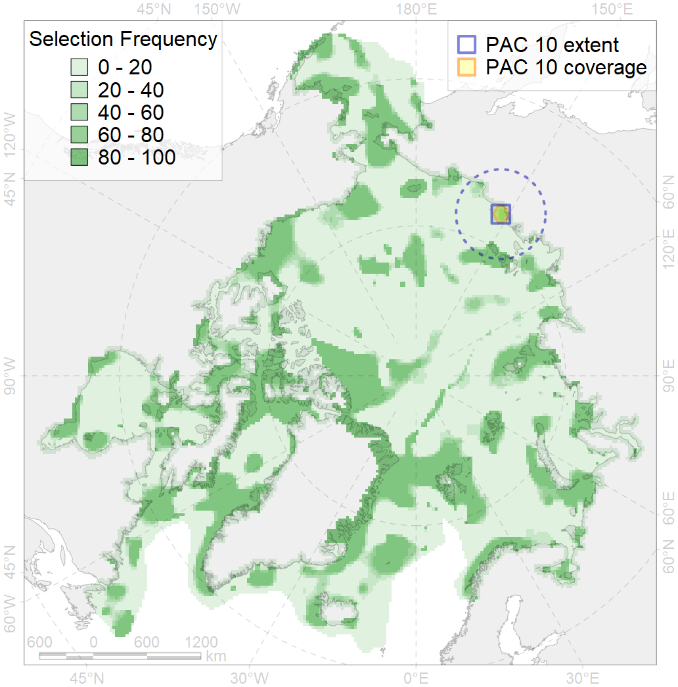
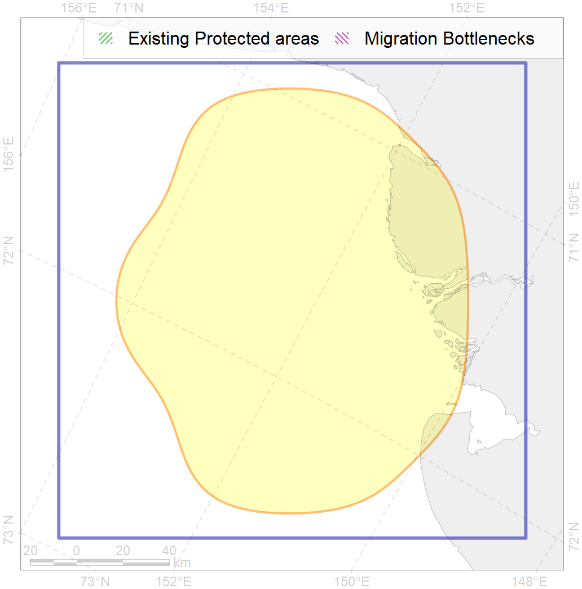

10
For more information regarding this PAC and to conduct custom spatial analysis using the PAC data or any spatial query, please consult Accenter.

0
CFs entirely within the PAC area
1
CFs at least 25% within the PAC area
1
CFs with at least 50% of their target achieved in the PAC
5
CFs with at least half of their target achieved in the PAC
| CF ID | CF Name | Proportion in the PAC | Conservation Target | Contribution to ArcNet Target Achievement | PAC’s Contribution to the Achieved Target |
|---|---|---|---|---|---|
| 8028 | intertidal zone of the East-Siberian Sea LME | 48.6% | 18.0% | 244.0% | 84.3% |
| 8019 | East Siberian sea estuaries | 13.5% | 50.0% | 26.1% | 20.7% |
| 7103 | II.1.1.12. East Siberian Shelf Coastal domain | 12.3% | 12.8% | 80.1% | 41.8% |
| 8035 | Salt marshes of the East-Siberian Sea LME | 11.6% | 30.0% | 29.4% | 27.8% |
| 3040 | Marginal Ice Zone distribution in July in the East-Siberian Sea LME | 6.3% | 24.0% | 20.2% | 20.2% |
| 7104 | II.1.1.13. East Siberian iInner shelf | 5.1% | 6.1% | 61.1% | 15.6% |
| 3008 | Fast ice distribution in the Eastern part of the Laptev Sea and the East-Siberian Sea | 5.0% | 6.0% | 65.2% | 14.0% |
| 4092 | Estuarian (Indigirka-Kolyma) brackish –water fish complex | 4.5% | 6.0% | 58.1% | 19.1% |
| 2009 | Bearded seal whelping areas in the East-Siberian Sea | 3.6% | 12.0% | 23.0% | 15.4% |
| 4010 | Feeding area of the Muksun (Coregonus muksun) | 3.5% | 32.4% | 8.2% | 8.1% |
| 4014 | Feeding area of the Siberian whitefish (Coregonus pidschian) | 3.2% | 24.0% | 10.5% | 6.6% |
| 4015 | Feeding area of the Broad whitefish (Coregonus nasus), American populations | 2.5% | 32.4% | 6.3% | 5.4% |
| 7035 | Siberian shelf region | 2.5% | 8.6% | 22.3% | 6.4% |
| 4036 | Distribution of the Borisov’s Arctic cod (Arctogadus borisovi) | 2.2% | 13.2% | 12.7% | 5.6% |